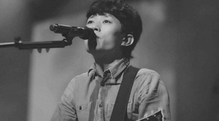
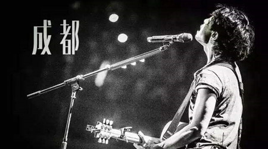
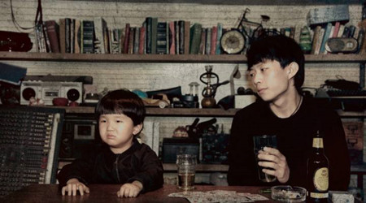
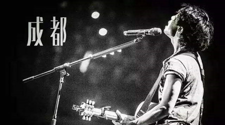
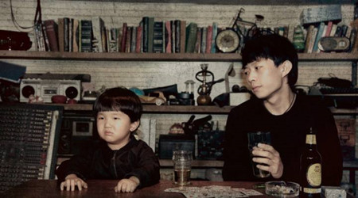

赵雷
个人简介
民谣音乐人赵雷，中国内地新生代民谣歌手。1986年7月20日生于北京，高中时间接触音乐，开始学习吉他。
年纪轻轻便踏遍祖国的大江南北，山河东西，足迹遍布陕甘、云藏，为自己的音乐之路，积累了大量时代底蕴与人文滋养。
赵雷的音乐，虽然没有诗句般的柔情感动，但痞子气的调侃，单纯率直直达你的内心。
词作、编曲朴实坦诚以描写生活中细微见长，每一首歌都像一部短剧，折射出他自己的生活、他眼中社会、甚至他心底的梦想，画面感极强。
是最具传统北京胡同文化气质的新生代音乐人之一。
专辑
- 《赵小雷》
- 《吉姆餐厅》
- 《再也不会去丽江》
- 《成都》
- 《无法长大》
- 《静下来》
- 《十九岁》
- 《彩虹下面》
单曲Top10
- 成都
- 画
- 鼓楼
- 理想
- 南方姑娘
- 吉姆餐厅
- 少年锦时
- 三十岁的女人
- 未给姐姐递出的信
成长历程
1986年生于北京，高中时开始接触音乐，组建拳头乐队，风格以民谣摇滚为主。
后师从北京著名地下音乐人赵照。随赵照转战北京大大小小的音乐酒吧，积累了丰富的现场演出经验。
音乐创作与音乐内涵逐渐丰满的赵雷，遇到了他音乐历程中导师赵照之外的另外重要人物，微薄之盐厂牌创始人乔小刀。
赵雷的音乐得到乔小刀的欣赏与肯定，得以有机会在2009年5月参与合辑《速写穿乐》的录制，收录其原创歌曲《北京的冬天》。
2009年下半年，配合《速写穿乐》的宣传，赵雷转战大江南北进行全国巡演，反响热烈。
经历了《速写穿乐》的合作微薄之盐也成了赵雷在北京最重要的演出场所之一。
2010年4月在TU87影音工作室与微薄之盐的帮助下，赵雷拍摄录制了自己的第一支MV《已是两条路上的人》。
2010年5月，参加湖南卫视“快乐男声”长沙赛区海选，以翻唱作品《塔吉汗》和原创作品《画》
受到太和麦田宋柯老师首肯，赞扬他的音乐有很高素养，有鲜明的个人的特色，很民族很中国，通过出色表现，拿到全球第二张PASS卡。
后被取消参赛资格。一位优秀的新生代唱作人，险些就此被弃。但其率真、豪爽、自信的个人气质与朴实、鲜明的音乐风格，成功打动了全国的乐迷。
一句“有些人可以唱歌，有些人必须唱歌，我就是那个必须唱歌的人”，“我要掀起民谣音乐的新浪潮”，更成为乐迷心中的名言。
后赵雷转战广州，搭上“快乐男声”的末班车，一路经历了“评委质疑”事件的压力和困扰，
顽强的一路走过，从质疑到首肯，并终以广州唱区第一位直接晋级全国300强的选手身份，昂首重回长沙。
也许在媒体看来，赵雷是个满是新闻点的音乐人，其实不然，私下他是个很低调的人。
了解他的朋友和乐迷都知道，他从未沉醉于乐迷的狂热追捧，拥有了知名度和认可度之后的赵雷，越发觉得音乐应该回归本真的重要性。
他的自信，他的霸气，不是为了博得众人目光，不是为了鲜花，不是为了掌声，只是单纯的对知音的渴望，只是为了对得起音乐。
赵雷图片
 


